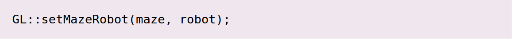

O objetivo deste trabalho é implementar robôs com comportamento variado. Os robôs tentarão encontrar a saída de um labirinto similar ao seguinte:
|
|
Quando criado, um robô receberá (através de seu construtor), a posição inicial, um ponteiro para um labirinto e o número máximo de passos permitidos para que ele atinja a saída.
Todos os robôs herdam de uma superclasse abstrata chamada Robot, a qual define alguns métodos, os quais deverão ser sobreescritos:
Construtor: recebe a posição inicial, o ponteiro para o labirinto e o número máximo permitido de passos;
draw: desenha o robô (veja o exemplo em RobotB9.cpp)
move: movimenta o robô, i.e. modifica suas coordenadas para a posição recebida.
generateSteps:
produz a sequência requerida de pontos (Point) para mover o
robô da posição inicial à saída do labirinto. A sequência
depende do algoritmo de movimento (ver abaixo).
Nota:
considere que um robô tenha saído do labirinto quando a sua
posição exceder os limites do mesmo. Considere também que os
robôs irão se mover apenas vertical ou horizontalmente.
getSteps: retorna a lista de pontos (um vector) gerado pelo método generateSteps.
A idéia é criar robôs que irão tentar sair do labirinto. Dessa forma, você deverá implementar três subclasses de Robot, cada uma usando um algoritmo de movimento específico:
O robô Robby, que sempre se moverá em uma direção (e.g. para a direita). Quando atinge uma parede, o robô deve virar à direita. Caso não seja possível virar à direita, o robô deverá virar à esquerda. Uma vez que este robô provavelmente não será capaz de abandonar o labirinto, ele irá desistir após um número de passos especificado.
O robô Ar-Tur, o qual seguirá o labirinto mantendo seu “braço esquerdo” tocando a parede. Dessa maneira, ele sempre irá seguir a parede da esquerda, aonde quer que vá. Este robô irá eventualmente sair do labirinto.
O robô T-800, o qual deverá utilizar um algoritmo diferente dos demais – crie o seu próprio! Idealmente, procure desenvolver um algoritmo que permita ao robô sair do labirinto.
Para cada robô, você deverá modificar o método draw para mudar a imagem utilizada.
A classe RobotB9 implementa um robô simples, cujo movimento é completamente randômico. Você pode usá-la como base para escrever o código para os demais.
De forma similar aos robôs, o labirinto é definido por uma classe abstrata Maze:
isEmpty: retorna true se uma dada posição está vazia ou false caso contrário.
getWidth, getHeight: retornam o tamanho do labirinto (largura e altura).
getRobot: retorna o tipo de robô definido no arquivo (1, 2 or 3).
getIniPos: retorna a posição inicial do robô, também lida do arquivo.
loadMaze: carrega o labirinto de um arquivo – este método deve finalizar o programa caso os dados estejam corrompidos ou haja um erro de leitura.
Em suma, você precisa criar uma classe que implementa os métodos abstratos da Maze. Isto é necessário para que o labirinto seja desenhado pela biblioteca gráfica (veja abaixo):
O formato do arquivo do labirito é como se segue:
Note que o labirinto é representado por caracteres, sendo “*” (parede) ou um espaço em branco(vazio).
Extra: Caso deseje, além de implementar a leitura do labirinto a partir de um arquivo, você também poderá criar um método para, dependendo de escolha do usuário, gerar seu conteúdo algoritmicamente. Nesse caso, seu algoritmo deverá gerar um labirinto perfeito.
A classe TestMaze implementa um labirinto de teste, o qual possui apenas paredes de contorno e uma saída na parte inferior.
No intuito de tornar este trabalho mais interessante, será fornecida a classe GL, a qual implementa uma visualização do labirinto através da biblioteca OpenGL. A classe deve ser utilizada como segue.
O programa principal começará chamando GL::init, que inicializa a biblioteca gráfica e cria a janela.
Em seguida, você deve criar o labirinto e os robôs. Após, você deverá chamarGL::setMazeRobot, enviando um ponteiro para o labirinto e um ponteiro para o robô:
|  |
Finalmente, você deverá chamar GL::loop, a qual nunca irá retornar:
|
|
A partir daqui toda a interação ocorrerá a partir da classe GL:
você NÃO PODERÁ chamar os métodos GL de outras partes do programa.
A interface gráfica chama generateSteps automaticamente, draw e getSteps do robô. Assim, para interagir com a GUI você deverá usar os comandos a seguir:
Setas direita e esquerda: movem para a frente e para trás através de uma lista de passos (obtida pelo método getSteps)
ESC: termina o programa.
Note que você não precisará criar um objeto GL: todos os métodos são estáticos (static).
Resumindo, você deverá:
Implementar uma classe que irá herdar de Maze.
Escrever as 3 classes derivadas de Robot.
Veja o resultado do programa abaixo, usando as classes TestMaze e RobotB9:
Você deverá baixar o template de código robots-base.zip , o qual possui todo o material necessário para a realização do trabalho: o projeto completo, bibliotecas e alguns exemplos de labirinto. Há um único projeto do Code::Blocks, mas você deve selecionar o correto destino da compilação (Windows ou Linux) uma vez que as bibliotecas são diferentes. As bibliotecas de Windows estão inclusas, mas se você estiver utilizando o Linux, você deverá instalar a freeglut3-dev e a libjpeg8-dev. É fortemente recomendado o uso da versão Linux do trabalho.
Por favor, leia atentamente as regras de avaliação:
Ao final de sua implementação, sua solução deverá:
Carregar e apresentar o labirinto corretamente a partir de um arquivo texto (use os arquivos fornecidos para testar sua aplicação).
Implementar corretamente o algoritmo de movimento para cada tipo de robô.
Pontuação:
Carregar o labirinto de um arquivo texto (classe que estende Maze): 20%
Implementação do Robby: 20%
Implementação do Ar-Tur: 20%
Implementação do T-800 : 30%
Uso adequado de conceitos de orientação a objetos: 10%
Implementar a geração automática do labirinto perfeito: 5% (extra)
Toda a comunicação com o usuário deverá ser feita através da GUI (interface gráfica de usuário) – não será permitido usar o terminal para entrada ou saída.
A implementação deverá seguir a convenção de código C++ (i.e. nomes de classes deverão iniciar com maiúsculas; atributos, métodos e variáveis locais deverão iniciar com minúsculas).
É exigência explorar herança e polimorfismo.
O código deve estar corretamente identado e apropriadamente comentado.
Os trabalhos devem acontecer em grupos cujos tamanhos serão determinados na aula de divulgação deste enunciado. A pasta do projeto deverá ser comprimida como um arquivo zip e submetida pelo Moodle até a data limite de entrega.
A nota dependerá da apresentação no laboratório. Submissões sem apresentação não serão consideradas, assim como soluções com funcionamento parcial ou que não compilem. Todos os integrantes do grupo deverão ser capazer de responder às perguntas sobre o código.
Os grupos serão incentivados a interagirem entre si. No entanto, trabalhos com códigos idênticos receberão penalidade severa na nota atribuída.
Este enunciado foi elaborado com base em material gentilmente cedido pelo professor Marcelo Cohen.